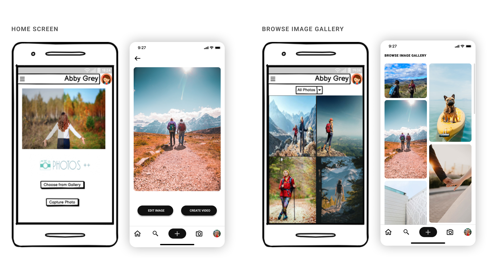
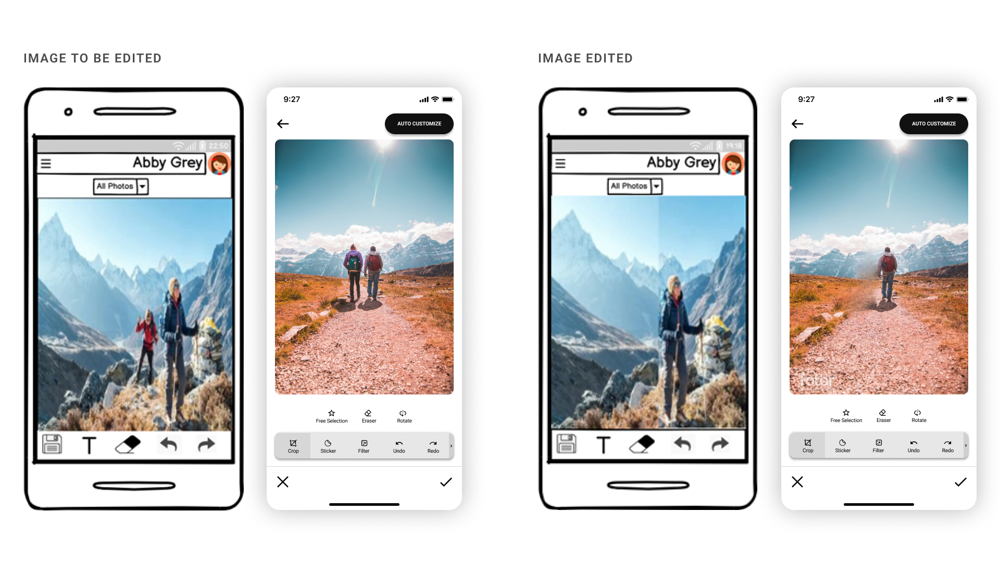

PHOTO EDITING APP CASE-STUDY

Overview
With increasing popularity of social media applications, trend of using photo editing applications on smaller screen devices like mobile has increased vastly.
Objective
The objective of the Background Noise Reduction and Salvaging Unusable Photos theme is to provide a means for users to enhance photo quality by removing unwanted elements from the images.
Role: UX/UI Designer
Tools used: Figma
Understanding the user
By studying visual user behavior, i.e. the gestures that naturally separate the foreground from the background,
and the usability obstacles with existing applications on the market, we have uncover potential problems that
still need to be resolved. My role is to understand the problems of users like Abbey Gray and design more interactive
and user-friendly interfaces that require less learning curve and interact with the application with ease.
This project solves user problems by providing features such as removing background noise and restoring photos,
editing or creating short clips, customization, and adding templates.
User Persona

Wireframe
After doing a few rounds of quick prototyping with pen and paper, I started putting everything together using Balsamiq. After making the final decision, I turned to Figma for wireframes, medium-fidelity layouts and grids, UI elements, design patterns, and visual hierarchy. After adjusting the images, color palette, typography, and creating an icon set, I apply them with high fidelity.
 

Style Guide
Roboto fonts were chosen for their readability and professionalism. I chose to use a monochromatic color palette of black and gray to convey professionalism and safety, while also recalling the colors found in neighboring photo editing applications.